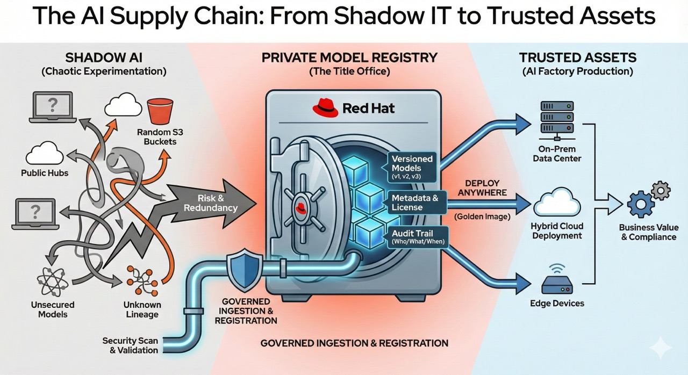

Making the RHOAI Model Registry Work for You
The AI Supply Chain: From Shadow IT to Trusted Assets
Stop treating AI like a science fair. Start building a factory.
In the world of software development, no enterprise would allow developers to email zip files of source code to one another. They use Git. They use version control. They use pipelines.
Yet, in the world of artificial intelligence, this "wild west" approach is typical. Data scientists download gigabytes of open-source models (LLMs) to personal laptops, store weights in random S3 buckets, and deploy "magic black boxes" with no history, no lineage, and no security audit.
This is shadow AI. And it is the primary blocker to enterprise adoption.
|
The Core Sales Objection
"Why should we build a private Model Registry when we can just use Hugging Face or public APIs?" Because you cannot govern what you do not own. Public hubs are for discovery; your private registry is for control, sovereignty, and compliance. |
The Solution: The Model Registry
The Red Hat OpenShift AI (RHOAI) Model Registry is the "title office" for your organization’s intellectual property. It transforms a scattered collection of model files into a governed AI supply chain.
The Model Registry serves as the bridge between the chaotic world of experimentation and the rigid world of production operations.

Three Pillars of Value
By implementing the Model Registry, you unlock three critical capabilities that "cheap public APIs" cannot provide:
1. Sovereignty & Security ("The Vault")
When you rely on public APIs, your data leaves your perimeter. When you rely on public model hubs, you are dependent on their uptime and their policy changes.
-
The win: The Model Registry keeps the model metadata strictly within your hybrid cloud environment.
-
The benefit: You have a disconnected, air-gapped ready "vault" that ensures your proprietary fine-tuned models never leak.
2. Efficiency & Reuse ("The Single Source of Truth")
Without a registry, five different teams might download Llama-3-7b five different times, uploading copies to five different S3 buckets. This creates "model drift," where no one knows if they are using the exact same weights.
-
The win: The registry enforces a "golden reference."
-
The mechanism: The registry does not store the massive model files itself. Instead, it acts as the authoritative pointer. It holds the immutable URI (e.g.,
s3://prod-models/granite-7b-v1/) and the cryptographic hash of the model. -
The benefit: When a platform engineer deploys to private infrastructure, the edge or cloud, they query the registry for the "production" tag. The registry directs them to the single, approved object in your secure storage. You build the configuration once, and the registry ensures every deployment uses the exact same asset.
3. Governance & Lineage ("The Audit Trail")
In regulated industries (Finance, Healthcare, Public Sector), you must answer the question: "Who deployed this AI, and what data was it trained on?"
-
The win: Every model version is stamped with metadata: author, license, source URI, and performance metrics.
-
The benefit: You achieve compliance by default. You can trace a hallucinating model in production back to the exact training set and developer who registered it.
Your Mission: Build the Factory
In this course, you will not just learn about the registry; you will build one. You will take on the role of a platform engineer tasked with bringing order to a chaotic data science team.
You will execute the following technical workflow:
-
The infrastructure: Deploy the backing services (MySQL & Object Storage) required to power the registry.
-
The ingestion: Use Python code to fetch a model from Hugging Face and formally "register" it with versioned metadata.
-
The payoff: Connect your private registry to the Model Catalog, making your secure model available for one-click deployment by business users.
|
Prerequisites
To successfully complete the hands-on sections of this course, you need:
|
Ready to build? Let’s start by laying the foundation.